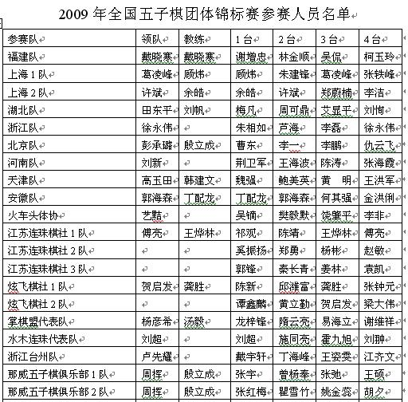
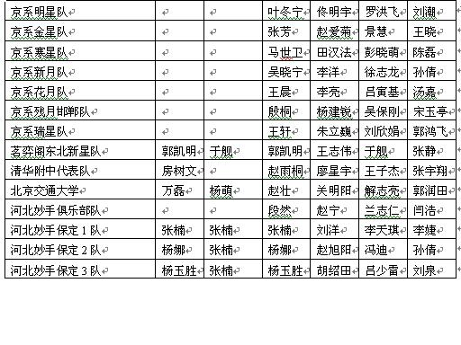

2009年全国五子棋团体锦标赛参赛队伍名单
#1 2009年全国五子棋团体锦标赛参赛队伍名单作者：无尽 发表时间：2009-5-22 10:53:47

［ 失落刀 于 2009-5-22 12:02:18 时奖励此帖[金币加 20 威望加1］
#2 Re:2009年全国五子棋团体锦标赛参赛队伍名单作者：丹尼 发表时间：2009-5-22 10:57:26
楼主辛苦了：）
#3 Re:2009年全国五子棋团体锦标赛参赛队伍名单作者：自来自去 发表时间：2009-5-22 10:58:26
好快啊。。。#4 Re:2009年全国五子棋团体锦标赛参赛队伍名单作者：牛牛 发表时间：2009-5-22 10:59:32
LZ无尽强大
#5 Re:2009年全国五子棋团体锦标赛参赛队伍名单作者：王小 发表时间：2009-5-22 11:01:20
花月对是不是 只下花月，呵呵。#6 Re:2009年全国五子棋团体锦标赛参赛队伍名单作者：屏蔽 发表时间：2009-5-22 11:10:02
……出来混果然是要还的。
我已经看到我惨不忍睹的糟糕成绩了。
#7 Re:2009年全国五子棋团体锦标赛参赛队伍名单作者：牛牛 发表时间：2009-5-22 11:12:45
6楼的又碰到“哦”了
#8 Re:2009年全国五子棋团体锦标赛参赛队伍名单作者：爱下不下 发表时间：2009-5-22 11:23:11
竞猜冠军喽！
#9 Re:2009年全国五子棋团体锦标赛参赛队伍名单作者：南京小飞机 发表时间：2009-5-22 11:44:35
4台好多MM
#10 Re:2009年全国五子棋团体锦标赛参赛队伍名单作者：Solmyr 发表时间：2009-5-22 11:48:31
 没有比这次比赛更纠结的比赛了！好多传说中的人物都露面了！！！小虫~呆呆~无伤~两道~龙卷风~这把有的玩啦！
没有比这次比赛更纠结的比赛了！好多传说中的人物都露面了！！！小虫~呆呆~无伤~两道~龙卷风~这把有的玩啦！#11 Re:2009年全国五子棋团体锦标赛参赛队伍名单作者：忧郁的双眼 发表时间：2009-5-22 11:54:38
围观围观
被北京围观
#12 Re:2009年全国五子棋团体锦标赛参赛队伍名单作者：失落刀 发表时间：2009-5-22 12:01:41
传说中的大侠，无聊鬼不参加，遗憾。
#13 Re:2009年全国五子棋团体锦标赛参赛队伍名单作者：流逝 发表时间：2009-5-22 12:23:12

#14 Re:2009年全国五子棋团体锦标赛参赛队伍名单作者：浩瀚铭剑 发表时间：2009-5-22 12:55:35
 北京出这么多队
北京出这么多队#15 Re:2009年全国五子棋团体锦标赛参赛队伍名单作者：钟梦 发表时间：2009-5-22 12:58:27
晤...所有人都加油咯。。。#16 Re:2009年全国五子棋团体锦标赛参赛队伍名单作者：茗弈小刀 发表时间：2009-5-22 14:41:43
祝福我的亲人，我的挚友取得好成绩！#17 Re:2009年全国五子棋团体锦标赛参赛队伍名单作者：流逝 发表时间：2009-5-22 15:12:16
为自己默哀中#18 Re:2009年全国五子棋团体锦标赛参赛队伍名单作者：忧郁的双眼 发表时间：2009-5-22 15:34:56
向牛表教头敬礼#19 Re:2009年全国五子棋团体锦标赛参赛队伍名单作者：南京小飞机 发表时间：2009-5-22 16:39:29
刀姐 我是你的亲人还是你的挚友啊
#20 Re:2009年全国五子棋团体锦标赛参赛队伍名单作者：堂堂 发表时间：2009-5-22 17:04:55
大家好运
#21 Re:2009年全国五子棋团体锦标赛参赛队伍名单作者：gerbo 发表时间：2009-5-22 17:19:34
简直就是海陆空大阅兵啊~~#22 Re:Re:2009年全国五子棋团体锦标赛参赛队伍名单作者：一期一会 发表时间：2009-5-22 18:15:59
引用：
原文由 堂堂 发表于 2009-5-22 17:04:55 :大家好运
帥哥讓讓我吧，巨寒~~~#23 Re:2009年全国五子棋团体锦标赛参赛队伍名单作者：方圆之外 发表时间：2009-5-22 18:30:28
 砍。。。。
砍。。。。#24 Re:2009年全国五子棋团体锦标赛参赛队伍名单作者：方圆之外 发表时间：2009-5-22 19:20:55
 谁能把参加比赛的棋手的网络ID都写写。。至少差不多有点名气的都写出来。。让大家瞅瞅。。认识认识。
谁能把参加比赛的棋手的网络ID都写写。。至少差不多有点名气的都写出来。。让大家瞅瞅。。认识认识。
我不能奖威望。。愿意奉上十朵花花``
#25 Re:2009年全国五子棋团体锦标赛参赛队伍名单作者：无尽 发表时间：2009-5-22 21:36:48
戴晓涵（小天） 谢增忠（冰魔） 顾炜（行云流水） 葛凌峰（魂之利刃） 张轶峰（新撰组组长）
梅凡（米兰） 周可鼎（海月） 艾显平（高飞） 余皓（james） 许斌（夜火）
朱相如（扣扣） 芦海（非鸟） 李磊（堂堂,misa） 徐永伟（伟鬼） 李一（屏蔽） 李鹏（土豆）
荆卫军（狐狸） 陈涛（纳兰） 王海波（堇色） 何其强（两道，道字杀手） 吴镝（大鱼,游戏人间）
樊毅默（阿福） 饶肇平（呆呆） 祁观（牛牛） 奚振扬（少帅） 杨彬（江南新绿）
陈新（风尘） 邱潍富（潇洒） 龚胜（流逝）谭鑫麟（无聊,奸细,入侵伊拉克） 贺启发（白痴）
黄立勤（清缘,疯子） 梁大伟（菜农） 龙梓锋（龙大叔,龙卷风,longdy） 隋云亮（忽悠,思默）
易海立（传鹰） 谢维祥（棋情） 霍九旭（碰碰,sunrain） 江齐文（小糊涂虫） 刘超（mordy）
上面不排除个别写错了，其他不知道或者不肯定，看楼下指正或者补充吧。。 我也想认识下
除了上面写过的，下面写出新的五个或以上的奖励1威望 像曹冬、仇云飞这些早已闻名并且真名跟
网名重复的就不算啦
还有，问问方圆之外叫什么啊？
［ 逆刃 于 2009-5-22 21:39:54 时花20金币送鲜花一朵］
［ 屏蔽 于 2009-5-22 22:26:10 时花20金币送鲜花一朵］
［ 方圆之外 于 2009-5-22 22:41:00 时花200金币送鲜花十朵］
#26 Re:2009年全国五子棋团体锦标赛参赛队伍名单作者：潇洒 发表时间：2009-5-22 22:20:17
郑蔚楠（阿布 HNJ） 赵敏（南京小飞机 冰蓝） 傅亮（罗马王子） 吴晓宁（beijingboy）
张钟元（(_炫飞☆梦） 叶冬宁（叶子 男）
［ 无尽 于 2009-5-22 22:27:47 时奖励此帖[金币加 20 威望加1］
#27 Re:2009年全国五子棋团体锦标赛参赛队伍名单作者：方圆之外 发表时间：2009-5-22 22:35:45
殷桐（感恩生活）杨建锐（废墟蝴蝶）吴保刚（天蝎蝴蝶）宋玉亭（五步之道）刘洋（无名之蓝）

［ 无尽 于 2009-5-22 22:36:17 时奖励此帖[金币加 20 威望加1］
你自己呢？
#28 Re:2009年全国五子棋团体锦标赛参赛队伍名单作者：方圆之外 发表时间：2009-5-22 22:37:01
怎么能一次送十朵。。#29 Re:Re:2009年全国五子棋团体锦标赛参赛队伍名单作者：方圆之外 发表时间：2009-5-22 22:38:40
引用：
原文由 方圆之外 发表于 2009-5-22 22:35:45 :殷桐（感恩生活）杨建锐（废墟蝴蝶）吴保刚（天蝎蝴蝶）宋玉亭（五步之道）刘洋（无名之蓝）
［ 无尽 于 2009-5-22 22:36:17 时奖励此帖[金币加 20 威望加1］
你自己呢？
我无名小卒。难登大雅之堂。。
#30 Re:2009年全国五子棋团体锦标赛参赛队伍名单作者：没定式随便下 发表时间：2009-5-22 22:40:57
又看到姚金蕊了。。多拍点照片哦。#31 Re:2009年全国五子棋团体锦标赛参赛队伍名单作者：方圆之外 发表时间：2009-5-22 22:41:43
。。。 怎么看上去多送了。
没看直接N次操作。
过了。
#32 Re:2009年全国五子棋团体锦标赛参赛队伍名单作者：爱的礼物 发表时间：2009-5-22 23:45:40
严重反对将比赛选手的网名公布出来,首先难道这些有网名的选手就表示水平高?那些无网名的或者你们不知道的就表示水平低?是不是很不公平.其次网名是选手的个人隐私吧,有些人可能在网上喜欢默默下棋不想被别人知道,你未经同意就公布是不是侵犯了隐私.并且网上网名重复的有很多,容易认错,并且可能导致某些心态不正的人冒充他人在网上恶搞,致使当事人名誉受损.#33 Re:2009年全国五子棋团体锦标赛参赛队伍名单作者：无尽 发表时间：2009-5-22 23:57:41
恩，关于私隐之说有些道理。
不过第一点只是阁下的个人想法问题，比较牵强；想默默下棋一般都用小号了，问题不大
网名不只在这里有了，别的地方都有。。 冒充的话，有心都能弄到的
明天看看是否移去贵宾区。。
#34 Re:2009年全国五子棋团体锦标赛参赛队伍名单作者：钟梦 发表时间：2009-5-23 7:10:13
安徽队：郭海森（淡月疏星 ，棋心愉悦天字杀手） 金洪俐（棋心愉悦俐字杀手，魔挲）
天津队：魏强（小小白） 鲍美英（ｓａｉ） 黄明（小豆，懒羊羊） 王洪军（秀吉）
佟明宇（棋心愉悦风字杀手）
［ 无尽 于 2009-5-23 9:24:39 时奖励此帖[金币加 20 威望加1］
#35 Re:2009年全国五子棋团体锦标赛参赛队伍名单作者：陨落之城 发表时间：2009-5-23 9:26:59
我们台州也有一只队去参加全国赛？#36 Re:Re:2009年全国五子棋团体锦标赛参赛队伍名单作者：茗弈小刀 发表时间：2009-5-23 15:19:02
引用：傻弟弟，你当然是我的亲人！
原文由 南京小飞机 发表于 2009-5-22 16:39:29 :
刀姐 我是你的亲人还是你的挚友啊
#37 Re:2009年全国五子棋团体锦标赛参赛队伍名单作者：花月痕 发表时间：2009-5-23 20:25:44
啊啊啊,老板也要参加比赛么#38 Re:2009年全国五子棋团体锦标赛参赛队伍名单作者：可乐可口 发表时间：2009-5-23 20:56:14
张楠（泥鳅）刘洋（无名之兰）#39 Re:2009年全国五子棋团体锦标赛参赛队伍名单作者：堇色 发表时间：2009-5-24 9:59:58
张楠